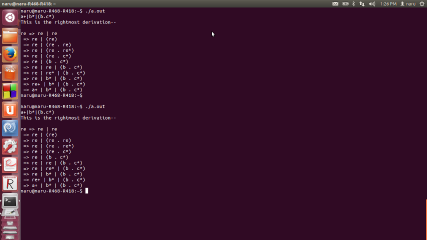

Yacc- Yet another C Compiler defines what it is all by itself. Computer program input generally has some structure; in fact, every computer program that does input can be thought of as defining an ``input language'' which it accepts. An input language may be as complex as a programming language, or as simple as a sequence of numbers. Unfortunately, usual input facilities are limited, difficult to use, and often are lax about checking their inputs for validity.
Yacc provides a general tool for describing the input to a computer program. The Yacc user specifies the structures of his input, together with code to be invoked as each such structure is recognized. Yacc turns such a specification into a subroutine that han- dles the input process; frequently, it is convenient and appropriate to have most of the flow of control in the user's application handled by this subroutine.
Every Yacc specification file consists of three sections: the declarations, (grammar) rules, and programs. The sections are separated by double percent ``%%'' marks. (The percent % is generally used in Yacc specifications as an escape character.) In other words, a full specification file looks like
declarations
%%
rules
%%
programs
The declaration section may be empty. Moreover, if the programs section is omitted, the second %% mark may be omitted also;thus,the smallest legal Yacc specification is
%%
rules
The following command:
yacc grammar.y
draws yacc rules from the grammar.y file, and places the output in y.tab.c.
The following command: yacc -d grammar.y functions the same as example 1, but it also produces the y.tab.h file which would contain C-style #define statements for each of the tokens defined in the grammar.y file.
%{/*declaration part*/
#include<stdio.h>
#include<ctype.h>
#include<stdlib.h>
#include<string.h>
#define MAX 100 /*to store productions*/
int getREindex ( const char* );
signed char productions[MAX][MAX];
int count = 0 , i , j;
char temp[200] , temp2[200];
%}
%token ALPHABET
%left '|'
%left '.'
%nonassoc '*' '+'
%%/*rules section*/
S : re '\n' {
printf ( "This is the rightmost derivation--\n" );
for ( i = count - 1 ; i >= 0 ; --i ) {
if ( i == count - 1 ) {
printf ( "\nre => " );
strcpy ( temp , productions[i] );
printf ( "%s" , productions[i] );
}
else {
printf ( "\n => " );
j = getREindex ( temp );
temp[j] = '\0';
sprintf ( temp2 , "%s%s%s" , temp , productions[i] , (temp + j + 2) );
printf ( "%s" , temp2 );
strcpy ( temp , temp2 );
}
}
printf ( "\n" );
exit ( 0 );
}
re : ALPHABET {
temp[0] = yylval; temp[1] = '\0';
strcpy ( productions[count++] , temp );/*copy the input to the prodcution array*/
}/*only conditions defined here will be valid, this is the structure*/
| '(' re ')' /*adds the (expression) to the production array*/
{ strcpy ( productions[count++] , "(re)" ); }
| re '*'
{ strcpy ( productions[count++] , "re*" ); }
| re '+' /*adds expression+ type to the production array*/
{ strcpy ( productions[count++] , "re+" ); }
| re '|' re /*adds the expression|expression to the production array*/
{strcpy ( productions[count++] , "re | re" );}
| re '.' re/*adds the expression.expression to the production array*/
{strcpy ( productions[count++] , "re . re" );}
;
%%
int main ( int argc , char **argv )
{
/*
Parse and output the rightmost derivation,
from which we can get the parse tree
*/
yyparse();/*calls the parser*/
return 0;
}
yylex() /*calls lex and takes each character as input and feeds ALPHABET to check for the structure*/
{
signed char ch = getchar();
yylval = ch;
if ( isalpha ( ch ) )
return ALPHABET;
return ch;
}
yyerror() /*Function to alert user of invalid regular expressions*/
{
fprintf(stderr , "Invalid Regular Expression!!\n");
exit ( 1 );
}
int getREindex ( const char *str )
{
int i = strlen ( str ) - 1;
for ( ; i >= 0 ; --i ) {
if ( str[i] == 'e' && str[i-1] == 'r' )
return i-1;
}
}
Commands for execution
